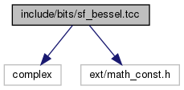

sf_bessel.tcc File Reference
#include <stdexcept>#include <complex>#include <utility>#include <emsr/fp_type_util.h>#include <emsr/sf_trig.h>#include <emsr/sf_gamma.h>#include <emsr/specfun_state.h>
Include dependency graph for sf_bessel.tcc:

Go to the source code of this file.
Classes | |
| struct | emsr::detail::cyl_bessel_asymp_sums_t< Tnu, Tp > |
Namespaces | |
| emsr | |
| emsr::detail | |
Macros | |
| #define | SF_BESSEL_TCC 1 |
Functions | |
| template<typename Tnu , typename Tp > | |
| constexpr cyl_bessel_asymp_sums_t< Tnu, Tp > | emsr::detail::cyl_bessel_asymp_sums (Tnu nu, Tp x, int sgn) |
This routine computes the asymptotic cylindrical Bessel and Neumann functions of order nu:  , . Use this for . More... , . Use this for . More... | |
| template<typename Tnu , typename Tp > | |
| constexpr Tp | emsr::detail::cyl_bessel_ij_series (Tnu nu, Tp x, int sgn, unsigned int max_iter) |
This routine returns the cylindrical Bessel functions of order  : or by series expansion. More... : or by series expansion. More... | |
| template<typename Tp > | |
| Tp | emsr::detail::cyl_bessel_j (Tp nu, Tp x) |
| Return the Bessel function of order : . More... | |
| template<typename Tp > | |
| emsr::cyl_bessel_t< Tp, Tp, Tp > | emsr::detail::cyl_bessel_jn (Tp nu, Tp x) |
| Return the cylindrical Bessel functions and their derivatives of order by various means. More... | |
| template<typename Tnu , typename Tp > | |
| constexpr emsr::cyl_bessel_t< Tnu, Tp, Tp > | emsr::detail::cyl_bessel_jn_asymp (Tnu nu, Tp x) |
| template<typename Tp > | |
| emsr::cyl_bessel_t< Tp, Tp, std::complex< Tp > > | emsr::detail::cyl_bessel_jn_neg_arg (Tp nu, Tp x) |
| Return the cylindrical Bessel functions and their derivatives of real order and argument . More... | |
| template<typename Tp > | |
| emsr::cyl_bessel_t< Tp, Tp, Tp > | emsr::detail::cyl_bessel_jn_steed (Tp nu, Tp x) |
Compute the Bessel  and Neumann and Neumann  functions and their first derivatives functions and their first derivatives  and respectively. These four functions are computed together for numerical stability. More... and respectively. These four functions are computed together for numerical stability. More... | |
| template<typename Tp > | |
| std::complex< Tp > | emsr::detail::cyl_hankel_1 (Tp nu, Tp x) |
Return the cylindrical Hankel function of the first kind  . More... . More... | |
| template<typename Tp > | |
| std::complex< Tp > | emsr::detail::cyl_hankel_2 (Tp nu, Tp x) |
Return the cylindrical Hankel function of the second kind  . More... . More... | |
| template<typename Tp > | |
| emsr::cyl_hankel_t< Tp, Tp, std::complex< Tp > > | emsr::detail::cyl_hankel_h1h2 (Tp nu, Tp x) |
| Return the cylindrical Hankel functions of the first and second kinds and their derivatives. More... | |
| template<typename Tp > | |
| Tp | emsr::detail::cyl_neumann_n (Tp nu, Tp x) |
| Return the Neumann function of order : . More... | |
| template<typename Tp > | |
| emsr::gamma_temme_t< Tp > | emsr::detail::gamma_temme (Tp mu) |
Compute the gamma functions required by the Temme series expansions of and  . More... . More... | |
| template<typename Tp > | |
| Tp | emsr::detail::sph_bessel (unsigned int n, Tp x) |
Return the spherical Bessel function  of order n and non-negative real argument of order n and non-negative real argument x. More... | |
| template<typename Tp > | |
| emsr::sph_bessel_t< unsigned int, Tp, Tp > | emsr::detail::sph_bessel_jn (unsigned int n, Tp x) |
Compute the spherical Bessel and Neumann functions and their first derivatives and  respectively. More... respectively. More... | |
| template<typename Tp > | |
| emsr::sph_bessel_t< unsigned int, Tp, std::complex< Tp > > | emsr::detail::sph_bessel_jn_neg_arg (unsigned int n, Tp x) |
| template<typename Tp > | |
| std::complex< Tp > | emsr::detail::sph_hankel_1 (unsigned int n, Tp x) |
| Return the spherical Hankel function of the first kind . More... | |
| template<typename Tp > | |
| std::complex< Tp > | emsr::detail::sph_hankel_2 (unsigned int n, Tp x) |
Return the spherical Hankel function of the second kind  . More... . More... | |
| template<typename Tp > | |
| Tp | emsr::detail::sph_neumann (unsigned int n, Tp x) |
Return the spherical Neumann function of order n and non-negative real argument x. More... | |
Macro Definition Documentation
◆ SF_BESSEL_TCC
| #define SF_BESSEL_TCC 1 |
Definition at line 46 of file sf_bessel.tcc.